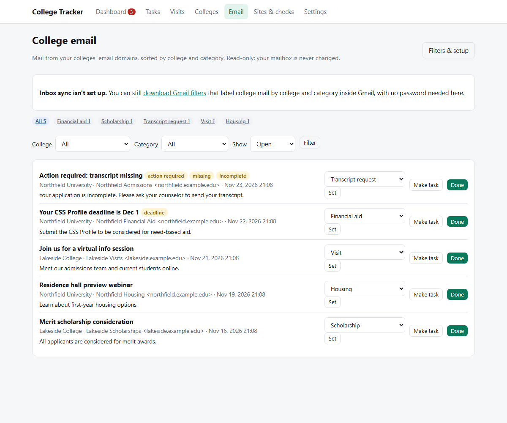
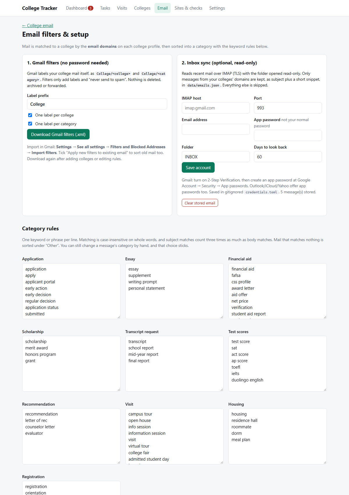
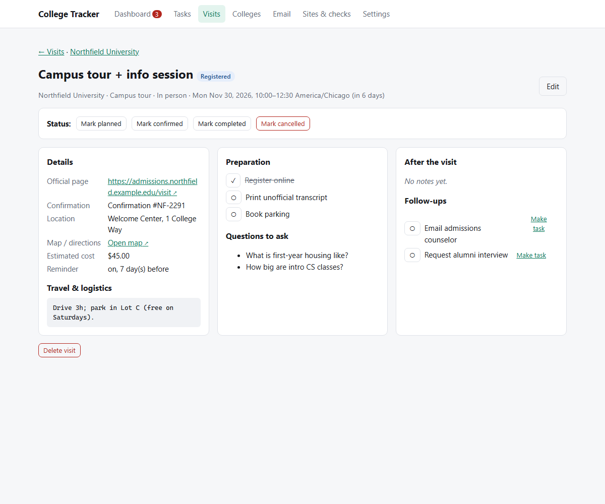
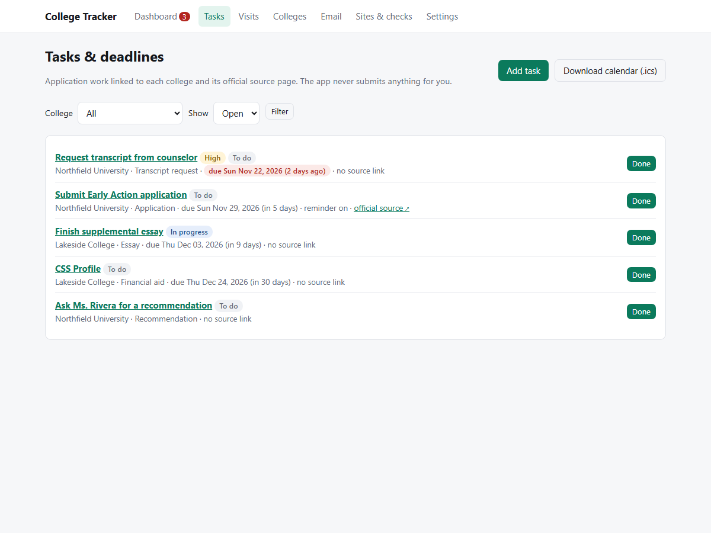
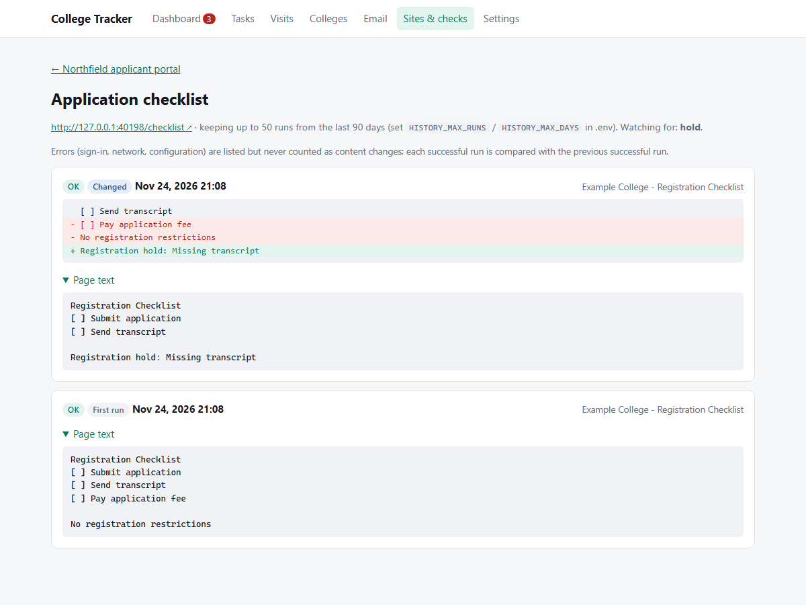
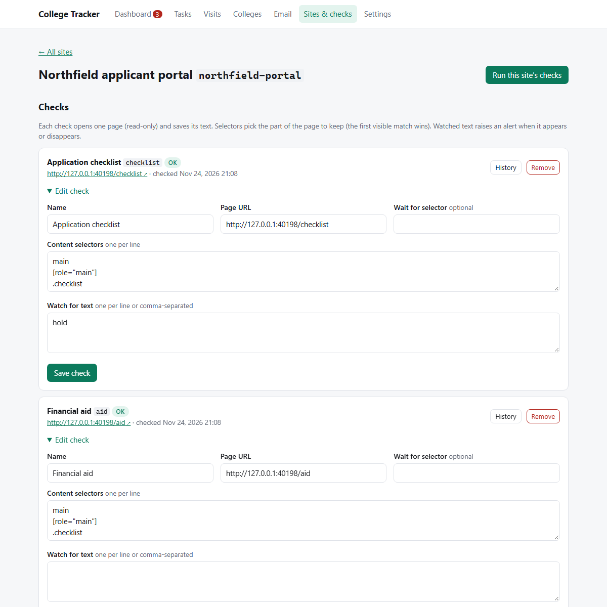
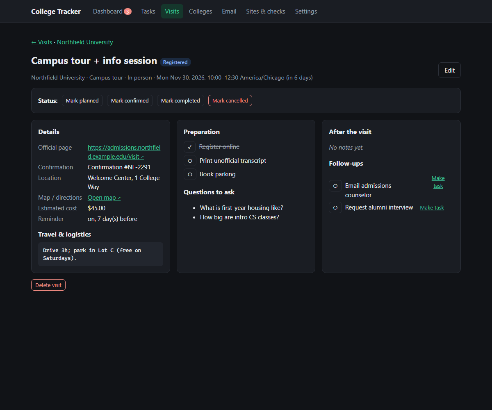

College Tracker
A local-first college planning hub. It runs read-only checks of the portals you're authorised to use, keeps your application deadlines and campus visits in one dashboard, and stores everything on your own computer.
View on GitHub Security model
Features
Read-only portal checks
Check several pages per site with Playwright. Each check keeps its page title, text, time checked and a clear error status.
History & diffs
Timestamped history with line diffs. Sign-in and network failures are never mistaken for content changes. Retention is configurable.
Watched text & alerts
Get an alert when words like “hold” or “missing” appear or disappear. Webhook notifications (ntfy, Discord, Slack) are opt-in.
You sign in, not a bot
Sign in yourself in a visible browser, including MFA, passkeys and CAPTCHAs. Sessions are saved per site, locally. When one expires, the app says so.
Tasks & deadlines
Application, aid, transcript and essay tasks, each linked to a college and its official source page. Overdue and upcoming work is surfaced.
College email by category
Download Gmail filters that label mail by college and category, or turn on a read-only inbox sync that flags anything urgent and turns an email into a task.
Runs on its own
Optional timers for portal checks, email sync and reminders, or one python run.py auto line in Task Scheduler or cron.
Campus visit planner
Tours, open houses, info sessions, virtual events and college fairs, with RSVP status, logistics, prep, questions and follow-ups.
Screenshots








Quick start
Windows
.\setup.bat .\run.bat # open http://127.0.0.1:5000
macOS / Linux
chmod +x setup.sh run.sh ./setup.sh ./run.sh # open http://127.0.0.1:5000
Then add your colleges, add a portal under Sites & checks, click Sign in, and run your first check.
python run.py check and python run.py remind work from Task Scheduler or cron.
Sign-in modes
| Mode | For | What happens |
|---|---|---|
manual | SSO, MFA, passkeys, CAPTCHAs | You sign in in a visible browser. The session is saved locally and reused until the site expires it. Then the check reports Sign-in needed. |
credentials | Simple login forms | Fills in a username and password saved locally. Stops for you if MFA or a CAPTCHA appears. |
none | Public pages | No sign-in. |
Privacy & safety
Local only
Binds to 127.0.0.1, rejects foreign Host headers, and uses CSRF tokens and a strict CSP. Data, sessions and credentials stay on your machine and out of Git.
Authorised use
Only for accounts you own or may access. Checks are read-only, and the app never registers you for events or submits forms for you.
No invented links
Every college, visit and task link is one you paste from the official site. Internal-network URLs are blocked unless you opt in.